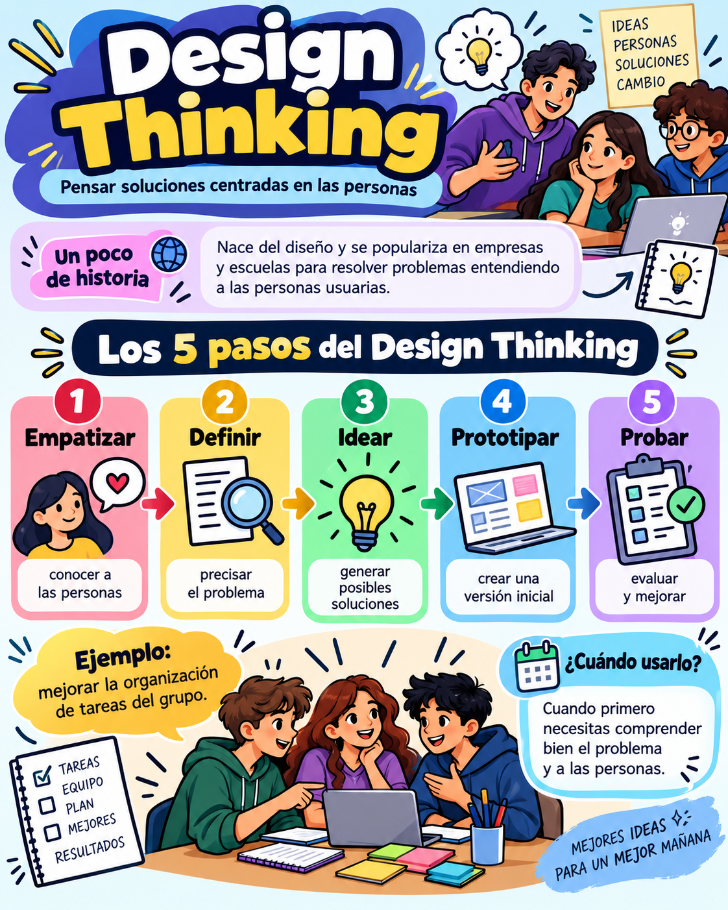

💡Design Thinking
Del diseño y la innovación centrada en personas
Idea clave: primero entiende a las personas y su problema; después construye la solución.

Fíjate en: los 5 pasos, el ejemplo escolar y el apartado ¿Cuándo usarlo?. Este enfoque te ayuda cuando aún no conoces bien el problema.
Tip: al hacer clic en la tarjeta superior, este bloque se resalta automáticamente.